Photography
I enjoy creating ludicrously large panoramas by taking many pictures and assembling them in Photoshop. For the largest panoramas, I use a 70-300mm lens, and take each image at maximum zoom. Using this technique, I've been able to take panoramas up to 56,000 pixels wide with file sizes over 600MB.With such a high resolution, images have interesting details at any scale. See if you can find where these detail patches came from!
Full size images are available on request. All images CC BY-NC 4.0.
 |
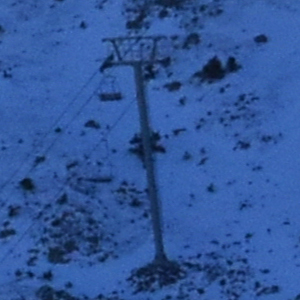 |
| 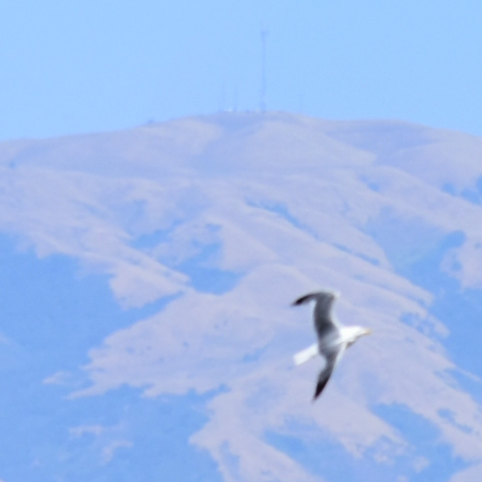 | 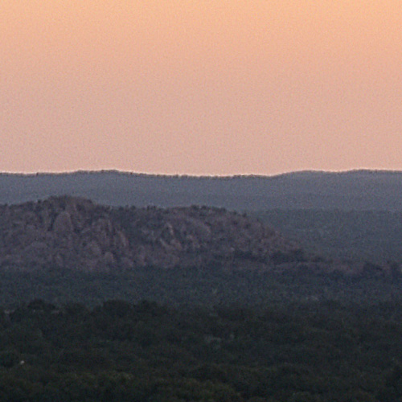 |
Panoramas
|
Ridge at Far Noon
Taos Ski Valley, New Mexico
|
16307 x 3888f/10.01/320sISO-400110mm | 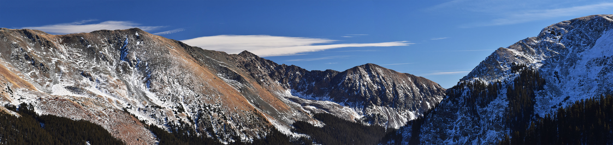 |
|
Pueblo Peak at Late Noon
Arroyo Seco, New Mexico
|
30000 x 5336f/5.61/320sISO-10070mm | 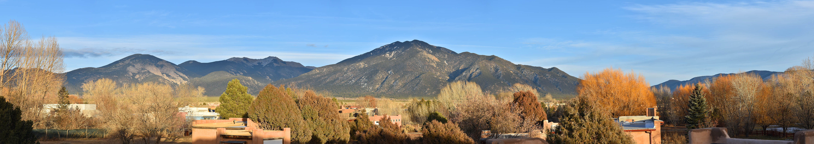 |
|
Pueblo Peak at Night
Arroyo Seco, New Mexico
|
19097 x 4012f/6.315sISO-320070mm | 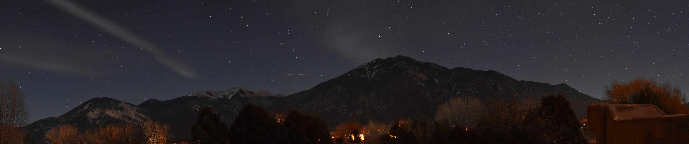 |
|
Sunset by the Rio Grande
Arroyo Seco, New Mexico
|
18817 x 3578f/6.31/200sISO-160300mm | 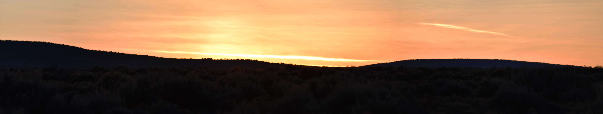 |
|
Sunsrise Over Enchanted Rock
Enchanted Rock State Natural Area, Texas
|
31681 x 3463f/6.3Jan-80sISO-10024mm | 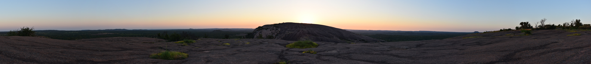 |
|
Marsh in Coyote Hills (East)
Coyote Hills Regional Park, California
|
36651 x 3825f/7.11/800sISO-20070mm | 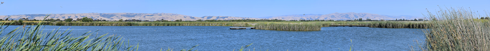 |
|
Marsh in Coyote Hills (North)
Coyote Hills Regional Park, California
|
56554 x 3743f/7.11/800sISO-20085mm | 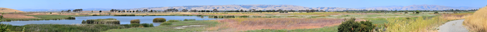 |
|
View of San Francisco
Coyote Hills Regional Park, California
|
22715 x 2723f/6.3Jan-00sISO-250300mm | 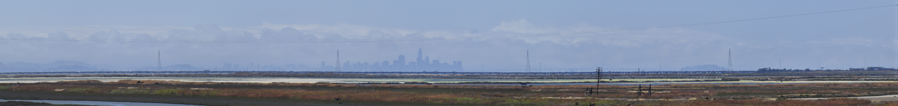 |